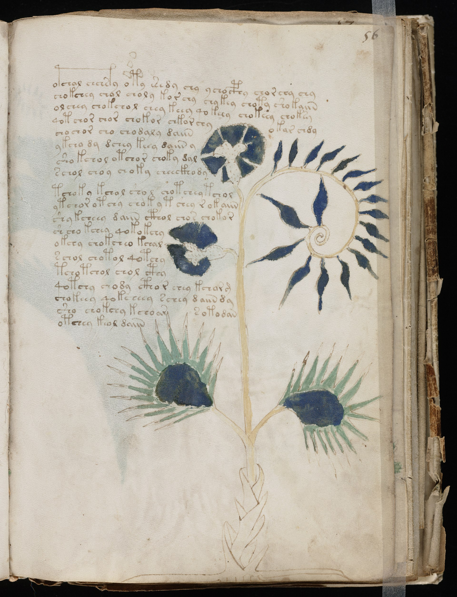
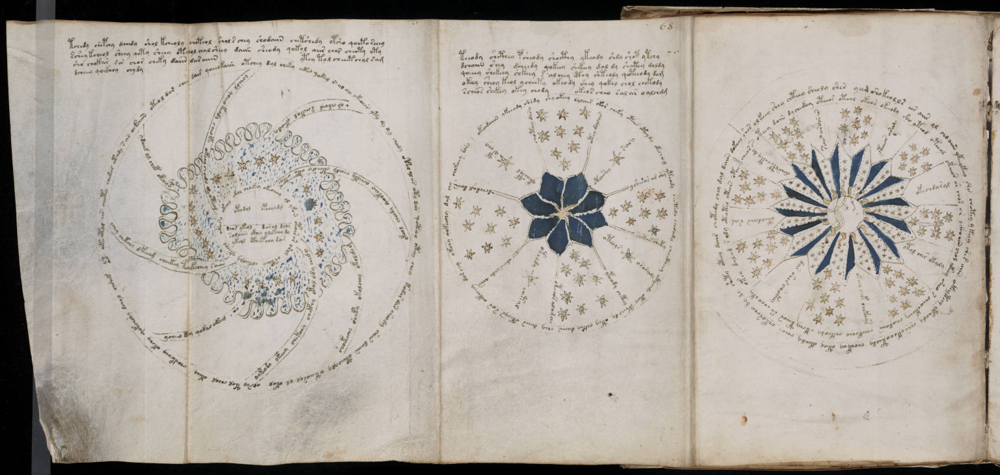
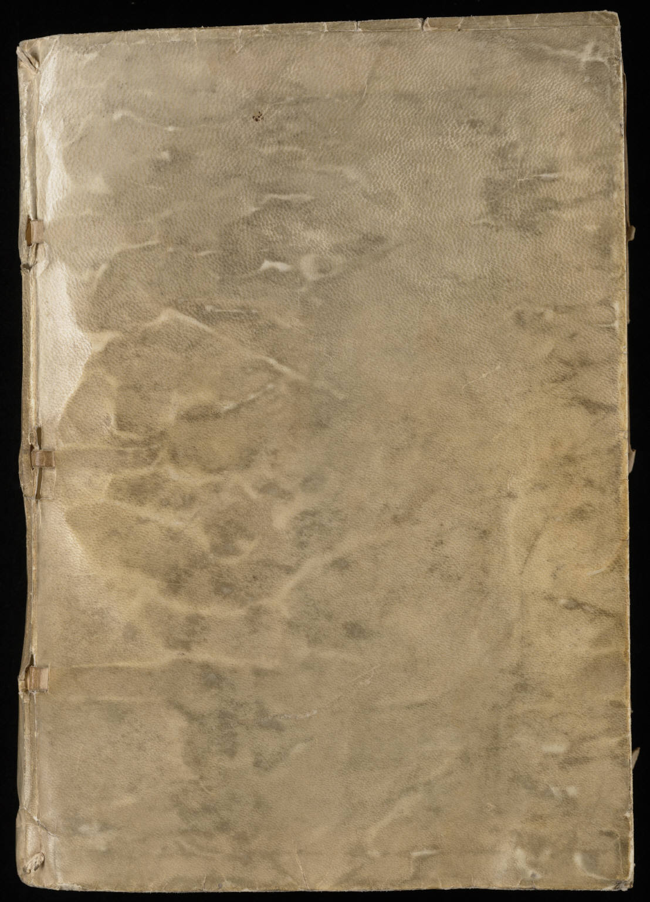

Voynich manuscript f.56r · Beinecke Library, Yale · public domain
c. 1404—1438
Nobody has ever
read this book
Six centuries old. Every attempt to decipher it has failed.
Voynich manuscript f.56r, detail · public domain
It looks like writing.
No alphabet matches it.
@theglassnegative · 02 / 06

Voynich manuscript f.68r, foldout · public domain
The diagrams look
astronomical
Rings of stars, and labels nobody can read.
@theglassnegative · 03 / 06
Voynich manuscript f.34r · public domain
Hundreds of plants. Most match
nothing that grows.
@theglassnegative · 04 / 06

Voynich manuscript · Beinecke Library, Yale · public domain
It is not a
modern fake
The vellum dates to 1404—1438. The ink matches the period.
@theglassnegative · 05 / 06
Voynich manuscript f.56r · public domain
Still open
Nobody knows
what it says
A lost language, an unbroken cipher, or an elaborate hoax.
Follow @theglassnegative